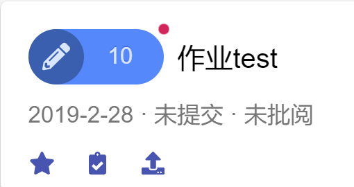
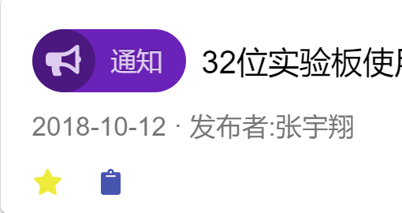
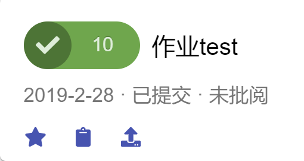
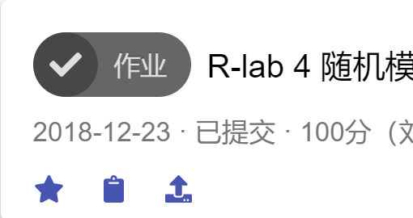
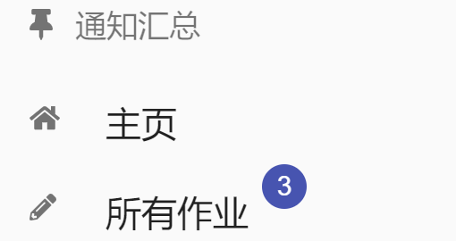
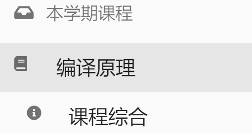
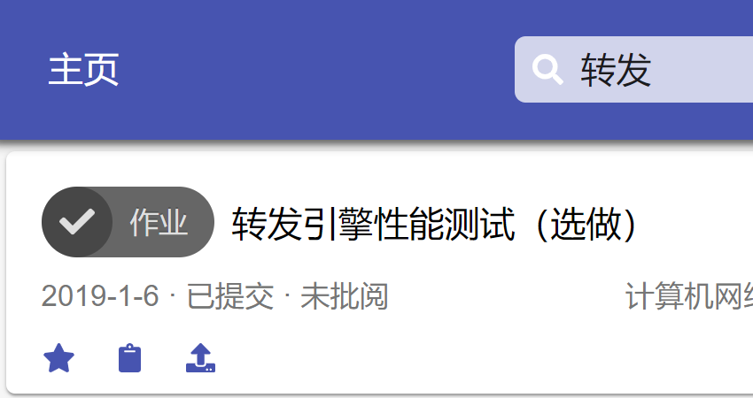
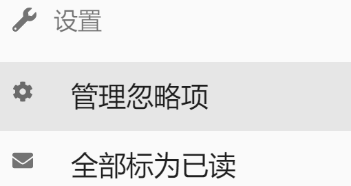
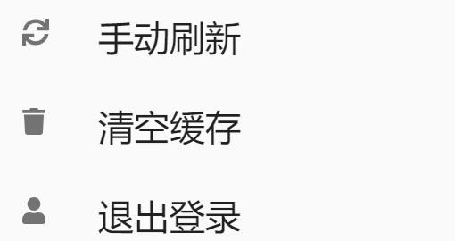

使用手册


星标项目
加星标的项目会始终保持在列表顶部。这是一条加星的通知，点即可进入详情。

作业提示
有红、橙、蓝三种颜色对应剩余时间，左下角有提交按钮。已交的作业是绿色的勾。

截止作业
过了截止日期的作业是灰色的笔或者勾，会显示提交和批阅状态（分数和评阅人）。
课程文件
点击标题即可下载文件，也可直接标记为已读（不同步到网络学堂）。

切换内容
在左上角可以切换查看各项信息的总览面板，角标是未读数量。

切换课程
点击左侧课程名字，可以查看该课程的各项内容，或者打开课程主页。

卡片过滤
使用过滤器，轻松地在成百上千个卡片中找到你要的那一个。

插件设置
可以隐藏某些课程的部分内容以免刷屏，也贴心地提供了一键解决强迫症的功能。

返回